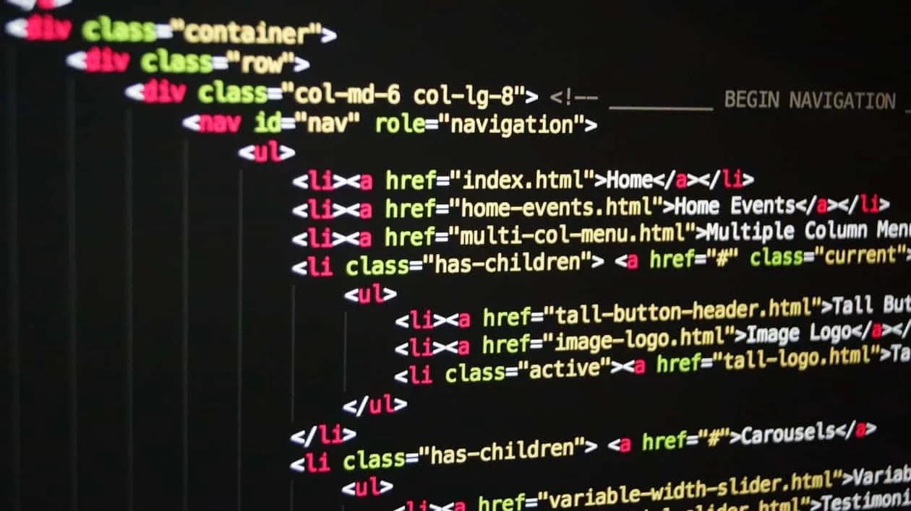
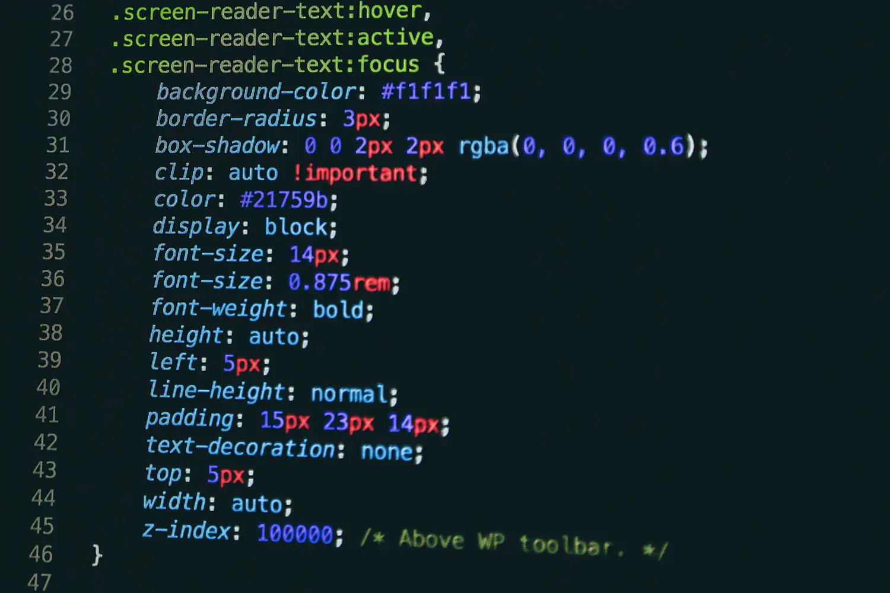
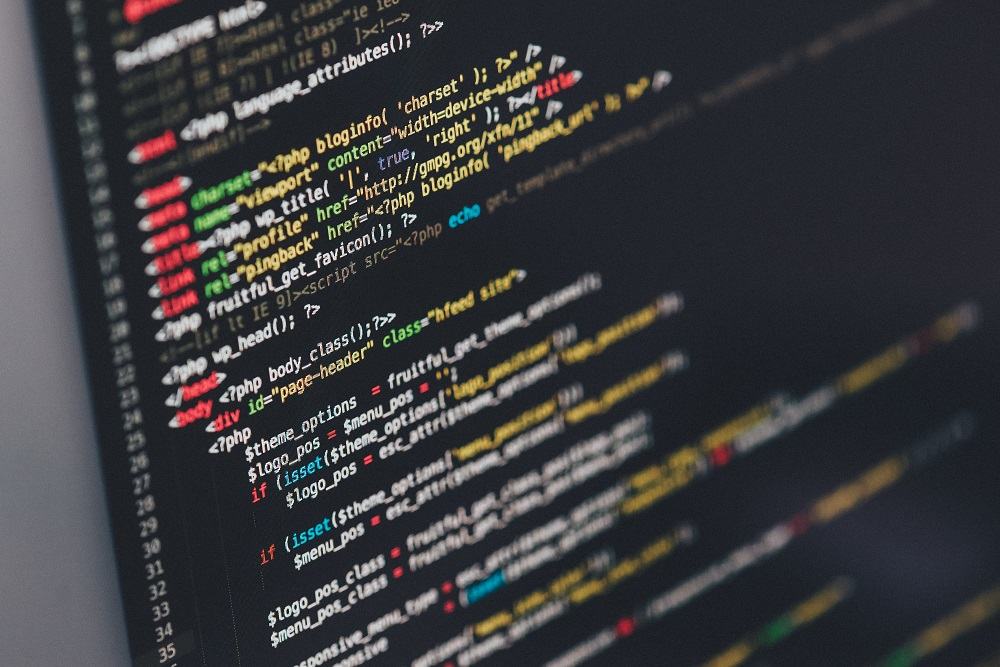

Notre Programme à Isitech
Html
L'HTML, pour HyperText Markup Language, constitue le langage de bases d'un site internet. Ce n'est pas un langage de programmation mais un langage de balisage qui permet d'écrire de l'hypertexte et ainsi de définir la structure sémantique d'une page web.
Css
Le langage CSS est devenu le langage de référence pour la mise en page des sites Web. Vous élaborerez des feuilles de style pour gérer l'apparence et la disposition des éléments de vos pages Web, utiliserez CSS avec JavaScript.
Javascript

JavaScript (souvent abrégé en "JS") est un langage de programmation pensé pour rendre les pages web interactives mais qui peut aussi être utilisé en dehors du navigateur gràce à des technologies comme NodeJS et Deno.
Php
Dans cette formation nous vous proposons de découvrir ensemble le langage PHP. Nous allons d’abord commencer par voir les bases du langage (variables, conditions, boucles…) puis nous allons pratiquer un peu à travers quelques petits exercices concrets.